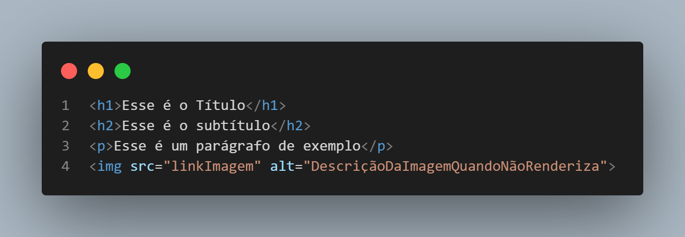
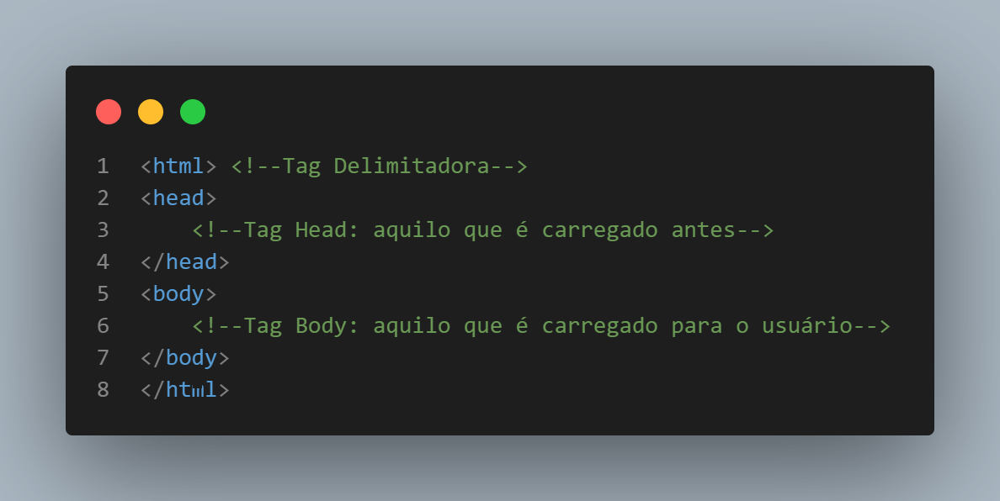
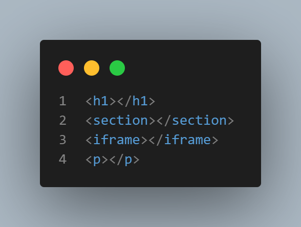

O desenvolvimento da web foi uma consequência do progresso paralelo de dois dos elementos mais comuns em nossos dias: o computador e a internet E não supreendentemente, surgiram nos períodos em que mais comumente ouvimos sobre inovações tecnológica: durante a Segunda Guerra Munidal(1939-1945) e a Guerra Fria (1947-1991) . Assim, é preciso previamente entender a história dos computadores e o surgimento da internet para compreender o funcionamento da Web.
As Gerações dos Computadores
Primeira Geração (1940)
Antes do desenvolvimento das primeiras máquinas, houve um trabalho massivo de homens e mulheres de teorias, cálculos e protótipos, até que em 1944, surgiu o primeiro computador, denominado Harvard Mark I.
Harvard Mark I
O computador em questão era uma máquina de cálculo complexos essencialmente mecânica, movida a válvulas e com um tamanho estrondoso (comparado com nossos modelos atuais).
Ainda nessa geração, mais especificamente nos anos de 1946, temos outras duas máquinas de destaque: O Colossus, de origem alemã, e o ENIAC, de ascendência americana.A primeira se destaca por sua funcionalidade em criptografia num contexto de intercepção de comunicação em guerra, e o segundo, se destaca pelos cálculos bélicos complexos. Inclusive, foi com a máquina americana que a programadora Grace Hopper introduziu o termo bug na computação.
ENIAC
Segunda Geração(1959-1965): Transístores
Nessa geração as válvulas foram substituídas pelos transístores de modo que os computadores começaram a diminuir de tamanho.A título de exemplo, pode-se citar o UNIVAC 1101, que mesmo não sendo de dimensões comuns para nossos dias, já era um avanço em termos de portabilidade.
UNIVAC 1101
Terceira Geração(1965-1970): Circuitos Integrados
Foi durante esse período que nasceram os chips, compostos por transistor, capacitor e resistor. Isso possibilitou o aprimoramento do processamento da máquina e, mais uma vez, a redução do tamanho dos computadores.
Quarta geração (a partir de 1971)
Nessa geração os circuitos integrados são aprimorados e transformados em microprocessadores. Com a união desses elementos aos chips, pôde-se continuar o desenvolvimento da tecnologia, dando origem aos Personal Computers(PC), ao mouse, ao mobile, e entre outros elementos muito conhecidos por nós atualmente.
Quinta geração
Apesar de não haver um consenso sobre quando essa era começa e se estamos vivendo-a ou não, sabe-se que pode-se atribuir a elas tecnologias como computadores quânticos, Artificial Intelligence(AI), metaverso e criptomoedas.
Computadores quânticos
Como surgiu a internet?
Antes da desenvolvimento da internet o telégrafo era a máxima tecnologia de comunicação entre os seres humanos. Até que a Corrida Espacial, durante a Guerra Fria, fomentou o desenvolvimento de uma rede galáctica de computadores: a internet.
ARPANET
A inspiração da internet foi Joseph Carl(1780-1850), quem propôs a possibilidade de existir uma rede onde todos pudessem se comunicar. Em 1959, pela DARPA, a agência de defesa e pesquisa avançada dos Estados Unidos, nasce a ARPANET, uma rede que conectava dois pontos, por onde aconteceu a primeira conexão e o tráfego de informação. Contudo, o dia que aconteceu a primeira conexão via internet, também aconteceu a primeira queda de conexão, já que da palavra enviada "login" só as letras "lo" chegaram em seu destino.
Aprimoramento: protocolo TCP/IP e WWW
Através dos informáticos Vinton Cerf(1943) e Robert Kahn(1938), a ARPANET pôde adotar o protocolo TCP/IP, que foi importante para começar um processo de estruturação da Internet e dos tráfegos de informação. Nessa época, muitas subredes estavam sendo criadas, e daí urgiu a necessidade de padroniza a internet e deixá-la mais acessível. Dessa forma, entra no cenário a colaboração do considerado o pai da internet, Tim Berners-Lee(1955), que utilizando do protocolo TCP/IP criou o WWW(World Wide Web) que trouxe a comunicação via hipertextp(http) e HTML.
Os clientes são as máquinas consomem informação ao se concectar com outro computador, no contexto da Web, esse outro computador é o servidor da rede. Esse servidor vai enviar aos Clients arquivos do tipo HTML, CSS, JS e imagens.
As máquinas dos clientes pode variar entre desktop, laptop,mobile phone, tablets, smartwatches, e entre outros, que se dividem em dispositivos desktop, ou seja, não portáteis, e dispositivos móveis, os portáteis, aqueles que vem sido utilizados cada vez mais nos dias de hoje.
Comunicação entre client e server pela internet
Browser(ou Navegador)
Os navegadores são programas instalados no dispositivo do client que interpreta os arquivos recebido do servidor web. Embora todos obedecam o padrão WWW, cada um deles tem sua particularidade na interpretação e no suporte de alguns recursos.
Exemplo de browser/navegadores
Aplicação Web
Aplicação Web são soluções que possuem a internet como meio de comunicação entre Client e Server, não sendo necessário a sua instalação no computador
Em outras palavras, aplicação web é o website, enquanto os aplicativos, são uma solução que necessita instalação.
Os conhecimentos e a programação para aplicação web é esencialmente diferente do desenvolvimento de aplicativos. Assim sendo, aidna que as informações contida num site e num app sejam as mesmas, ambas as estruturas tem particularidades entre si.
Os server são computadores que se comportam como máquina central de uma rede, seja ela a internet, ou uma intranet. Eles vão desde computadores simples, até os grandes DataCenters da google ou do facebook.
Hardware e Software dos Servidores
Assim como os computadores que conhecemos, os servidores possuem a parte lógica (Software) e parte física(hardware). A primeira parte é responsável pelos sistemas operacionais, monitoramento e servidores Web, enquanto a segunda, se trata do armazenamento, memória e processamento, sendo que esse precisa ser compatível com as grandes demanda que um servidor tem.
Em aplicações web, quando o client/cliente acessa um site ele faz uma requisição ao servidor. Quando o server recebe essa mensagem via internet, é o sistema operacional que vai recebê-la e ao identificá-la,ele busca no servidor Web o fornecimento dos arquivos do site (html, css, js, etc).Assim que ele feito a comunicação, o sistema operacional manda para o client o pedido que ele fez.
Exemplos Sistemas Operacionais:
Window Server;
Oracle;
Exemplos Servidor Web:
Apoche;
NGINX;
Os conhecimentos sobre esse assunto é importante para saber a melhor opção para cada situação no que diz respeito a hospedagens de sites. Qual o melhor servidor? Quanta memória de processamento é necessária? Assim por diante.
Tipos de servidores
Servidor Proxy
Esse é o servidor que intermedia a comunicação de alguns clientes, de uma empresa por exemplo, com o servidor da internet. A requisção e a resposta da requisição passa por esse computador. Esses dispositivos são utilizados quando a empresa quer restringir o acesso dos colaboradores à alguns sites.
Firewall
Em relação à sua posição na conexão com a rede, ele atua igual o Proxy, contudo, sua utilização é voltada a impedir o acesso malicioso ou suspeito ao servidor, fornecendo segurança ao mesmo.
Web Server
É o servidor que recebe e responde as requisições do clientes na rede na internet.
Email Server
Esse é o servidor que armazena os emails enviados e faz o controle do envio.
DataBase server
Esse servidor pode estar presente na internet ou numa intranet(rede privada), mas sua função é a mesma, armazernar dados, a título de exemplo, cita-se os dados de sites de cadastro. Quem acessa esse servidor é o web server, quando necessário.
DNS(domain name service)
Esses servidores são responsáveis por reconhecer quais números IP(Internet Protocol) o domínio do site digitado pelo client se refere. Isso acontece, porque cada site na rede internet é identificado por uma sequência de números(IP), que entre outras coisas, aponta qual servidor ele está hospedado. Para facilitar a navegação do usuário, os sites são acessados pelo client através dos domínios(url) no lugar esse código. Assim , no momento em que acontece a requisição do site, para buscar seu conteúdo no servidor, o DNS faz a tradução da URL para o IP para que ele seja localizado no server web que está hospedado.
Para que os usuários possam acessar um site pela internet, é preciso fazer o processo de Hospedagem do Site, que é a ação de "colocar" num servidor web todos os arquivos do seu site para que ele possa fornecê-lo aos clients que fizerem a requisição. Segue um algoritmo do processo:
Escolher e Comprar um domínio
O domínio é o nome do site,muito reconhecido pela estrutura dominio.com ou dominio.com.br. Quando o domínio possui o .br significa que ele é hospedado no Brasil, no site registro.br.
Antes de prosseguir, é importante distinguir a URL do dominio. A Url, é um conjunto de palavras que aponta todo o caminho para uma página específica da web. Enquanto o domínio aponta para "a porta de entrada" do site (Página Inicial), a URL levará a um "quarto" específico, por exemplo, alguma das outras páginas dentro do site.
Para comprá-lo é preciso visitar o site de uma plataforma que comercializa domínios, verificar se a opção de nome escolhido está disponível e escolher o plano. Alguns dados são requiridos, como o DNS, que é fornecido pela provedor de hospedagem. Caso não esteja disponível ainda, esse dado pode ser alterado depois pelo mesmo site.
Contratar serviço de hospedagem
Para prosseguir nessa etapa é necessário escolher uma plataforma que forneça esse serviço, entrar no site, escolher um plano e fornecer os dados requiridos.
Fazer o upgrade dos arquivos do site para o servidor:
É necessário baixar o programa que realiza o FTP (File Transfer Protocol), isto é a conexão para enviar os arquivos ao servidor. Parar tanto, pode-se utilizar de programas como o Filezila. Ao conectar-se, é só enviar(ou atualizar) os arquivos ao servidor
As linguagens de programação são um conjunto de instruções lógicas que determinam atividades para o computador realizar. São elas que possibilitam o Software.
Client-side x Server-side
As linguagens que operam no Client-Side são aquelas que se comunicam com a máquina do cliente(ou usuário). Dessa forma, quem as interpreta é o browser. São exemplos delas:
HTML;
Js;
Css.
Já as linguagens do Server-Side, elas são as que o servidor vai ler e executar. São exemplos delas:
Php;
Js;
Java;
Ruby;
C#.
A linguagem JavaScript, por outro lado, é uma linguagem que opera nos dois lados, pois possui um interpretador e executador específico que é o V8 . Ele foi anexado nos navegadores, e através de Node.Js(ambiente de execução do JavaScript), o V8 pode ser acessado pelos Severs também, possibilitando essa dupla atuação.
HTML é linguagem de programação?
Não! O HTML (HyperText Markup Language / Linguagem de marcação de texto e hyperlink), é uma linguagem de marcação de texto. É como se enviássemos uma mensagem em texto, e precisássemos dar orientação do que cada coisa escrita é, como o título, o parágrafo. Para tanto, o html faz uso das tags.

Introdução ao HTML na prática
Estruturação básica do Código
Um código HTML possui uma estrutura básica, que representa 3 secções marcadas por determinadas tags.
Tag HTML: Essa tag delimita o começo e o fim do código em HTML.
Tag head: Do português 'cabeça', representa a parte do código que carrega antes de acontecer qualquer exibição na tela no usuário.
Tag body: É a secção que contém o código que aparece para o usuário.
Segue uma demonstração. O conteúdo em azul são as tags, e o verde é o comentário do programa, isto é, conteúdo que o programador insere para auxiliar a compreensão do código, mas que não é lido pelo computador:

Tags HTML
As tags são os marcadores que vão fazer o processo de identificação do conteúdo do código. Por exemplo, se quando o browser for interpretar o código ele encontrar a tag "h1", ele vai entender que aquele conteúdo é um título.
Na maior parte das vezes, uma tag tem duas parte: a tag de abertura e a tag de fechamento. Ambas começam com o sinal "<" (menor que), possuiem o nome da tag, e terminam com o sinal ">"(maior que). Contudo, a tag de fim possue uma barra "/" antes do caracter ">".
Exemplo:

Todavia, há exceções, que é o caso das tags únicas, que tem a estrutura de uma tag de abertura,ou seja, sem a barra. Exemplo:


:strip_icc()/i.s3.glbimg.com/v1/AUTH_08fbf48bc0524877943fe86e43087e7a/internal_photos/bs/2021/5/S/9F0A8sRuOkq4UtBBStyg/2014-08-15-primeiro-computador-de-sucesso-com-transistores-o-univac-1101-ocupava-uma-sala-inteira.jpg)